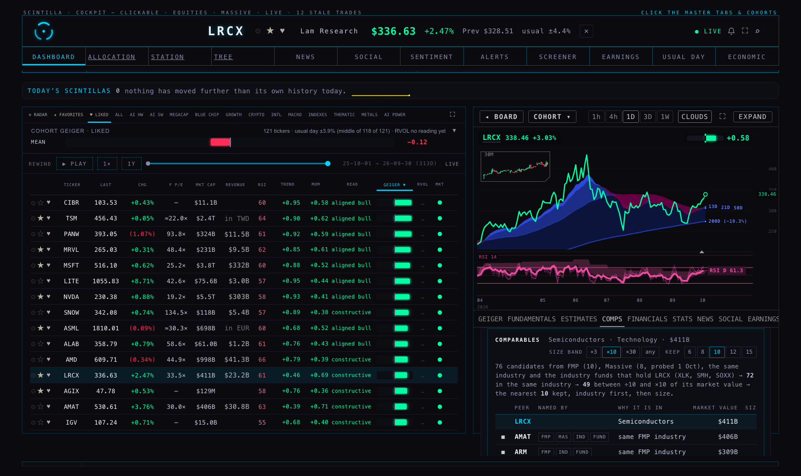
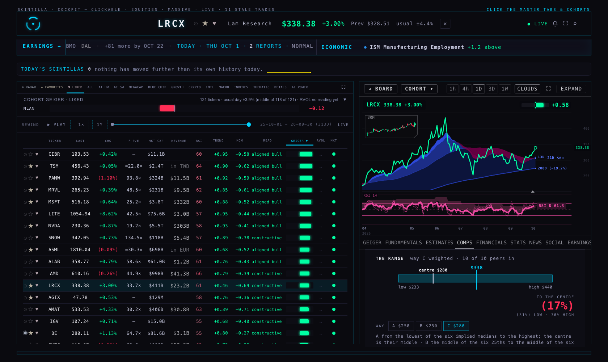
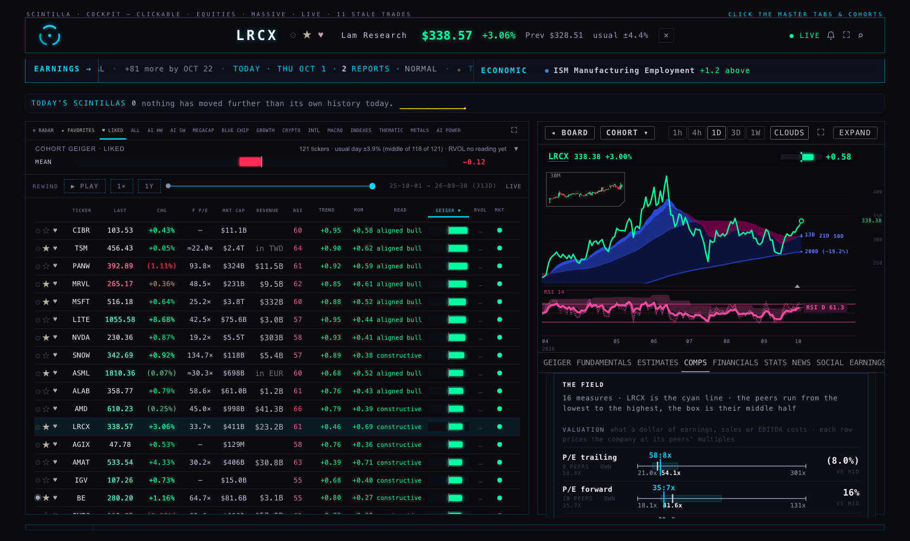
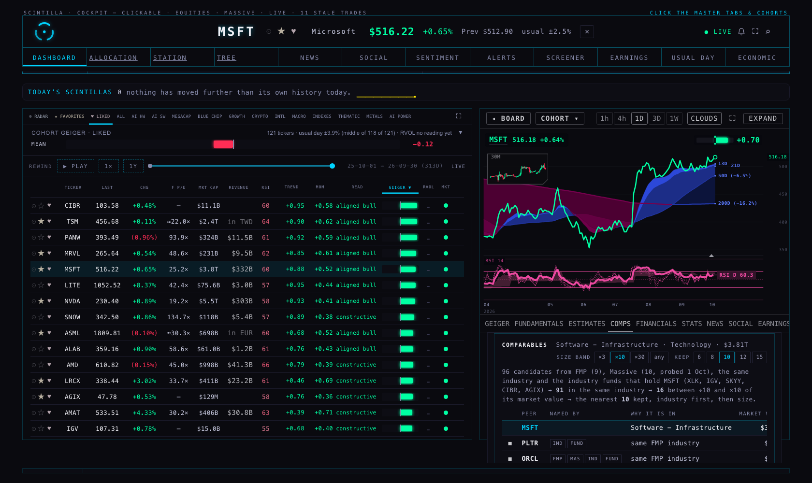
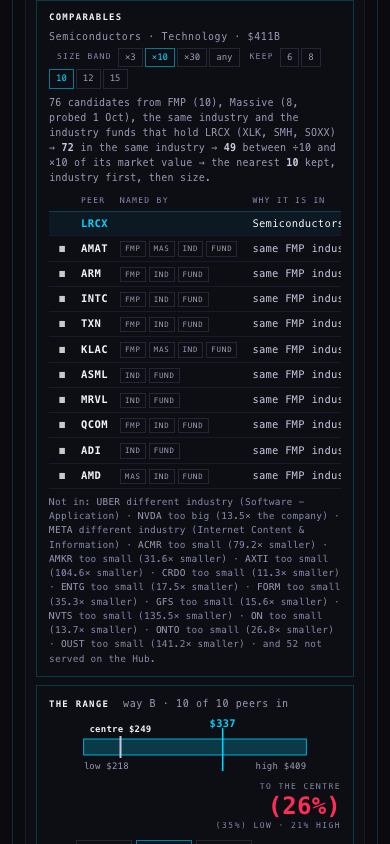
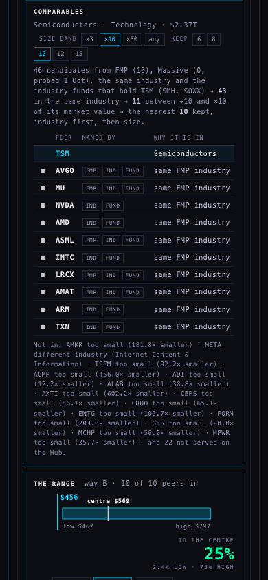

The comparable set is now one stated rule, the July method restored: candidates are the union of FMP's algorithmic peers, Massive's related companies, every served company in the same FMP industry (or SIC code), and the served holdings of the industry funds that hold the company; a candidate stays if it is in the same industry (FMP industry, SIC, or a shared industry fund) and its market value lies between ÷10 and ×10 of the company's (a visible control: ×3, ×10, ×30, any); the survivors are ranked industry-first then by size distance and the nearest 10 are kept (a control: 6 to 15). Every peer row says which sources named it, why it is in and its market value; the operator's on/off sits on top; the dropped names are listed with their reason. The cohorts leave the rule. The tab is one clean screen: the set, the range drawn as a small football field with the price as the one overlay, the A · B · C switch with C's weights in one line, the summary field (one bar per valuation measure on the dollar axis, the blend under them), then the field going down: 16 measures in five groups, valuation as price ranges, growth, margins, balance sheet and capex as positions among the peers; the full table closed below. No status chips, no repeated price, no "log axis", no "median" on every mark, plain numbers with negatives in parentheses, one cyan line for the company. On the 453 served companies the rule yields a set of five or more for 405, and the ways' centres differ by more than 5% for 282 of 409, so C weighted stays and C equal goes.
Sources on hand. FMP peers: public.fmp_peers, loaded by the coordinator today (4,455 rows; read in pages, as is fx_rates, since PostgREST serves 1,000 rows per request). Massive related companies and SIC codes: not in a table yet; for the four test names the coordinator's live probes of 1 Oct are in sources-20261001.json, named as such on the tab; for every other name the rule runs on FMP, industry and funds. Industry: FMP's industry on company_profile (97 industries across the served names). Funds: the tree's fund nodes with their served holdings (51 funds; broad and style funds, SPY to IWM, do not count; an industry fund holds at most 60 served names: SMH, SOXX, DRAM, IGV, SKYY, CIBR, XLK and the like). Market value: the profile's.
| Company | Industry | Candidates | Same industry | In the ×10 band | Kept | Named by FMP · Massive | Industry funds | Way B · low – high, centre | Price | To the centre |
|---|---|---|---|---|---|---|---|---|---|---|
| LRCX | Semiconductors | 76 | 72 | 49 | 10 | 6 · 3 of the 10 | XLK, SMH, SOXX | $217 – $408, $249 | $337 | (26%) |
| MSFT | Software - Infrastructure | 96 | 91 | 16 | 10 | 4 · 7 of the 10 | XLK, IGV, SKYY, CIBR, AGIX | $407 – $1,154, $711 | $517 | 37% |
| TSM | Semiconductors | 46 | 43 | 11 | 10 | 5 · 0 of the 10 (Massive names none) | SMH, SOXX | $466 – $796, $569 | $456 | 25% |
| MU | Semiconductors | 91 | 89 | 39 | 10 | 4 · 4 of the 10 | XLK, SMH, SOXX, DRAM, AGIX | $2,603 – $3,880, $2,801 | $1,041 | 169% |
LRCX's ten: AMAT, ARM, INTC, TXN, KLAC, ASML, MRVL, QCOM, ADI, AMD — every one in Semiconductors; AMAT and KLAC named by FMP and Massive both, AMD by Massive, ARM, INTC, TXN and QCOM by FMP. Not in: NVDA (13× the company, outside the band), ANET and INTU and UBER (FMP named them, other industries), MKSI and NVMI (Massive named them, not served). MSFT's ten: PLTR, ORCL, GOOGL, AAPL, AMZN, NVDA, SPCX, META, AVGO, TSLA — the industry is Software-Infrastructure (19 served names) and the band at ×10 keeps the ten largest technology names that share MSFT's funds (XLK, IGV, SKYY, CIBR, AGIX); ORCL is the only one in the same FMP industry, the rest are in by a shared industry fund. That is the rule working as stated, and it is also where the band and N controls earn their place: at ×3 MSFT keeps GOOGL, AAPL, AMZN, NVDA, SPCX, META, AVGO and TSLA (ORCL falls outside ×3). TSM's ten: AVGO, MU, NVDA, AMD, ASML, INTC, LRCX, AMAT, ARM, TXN — ten of the eleven Semiconductors names within ×10 of a $2.4 T company; five of them (AVGO, MU, ASML, LRCX, AMAT) are also on FMP's list, whose other names (AMKR, ASX, DIOD, TSEM, META) are unserved or another industry; Massive names none. TSM's statements convert from TWD at FMP's own rate, now on file: 0.03133 USD per TWD on 1 Oct. MU's ten: AMD, AVGO, ASML, TSM, INTC, LRCX, AMAT, ARM, NVDA, TXN. MU's +169% stands: its trailing EPS doubled on the 30 Sep report and its P/E is a third of its peers'.
On the 453 served companies with a profile (the 590 symbols less the funds), the default rule gives 405 a set of five or more, 38 a set of one to four, and 10 none. The median set is the full ten. The thin ones are the lone names of a one-company industry on the Hub (Uranium, Solar, Silver, Packaged Foods…) with no industry fund and no FMP peer served; they say so on the tab. The counts per name are in measure-2026-10-01.json.
| Measured companies with all four ways | Four centres differ by more than 5% | C weighted vs C equal more than 5% | …more than 1% | A vs B | Median spread of the four centres |
|---|---|---|---|---|---|
| 409 | 282 (69%) | 198 (48%) | 339 (83%) | never: they share a centre | 9.4% of the price |
A and B always have the same centre, by construction: both are the middle of the six implied medians; only their edges differ (A's are the lowest and highest median, B's the middle 25th and 75th). That is why they "looked similar". C weighted differs from C equal by more than 5% for almost half the names, so it earns its place; C equal is dropped from the switch. The switch is A · B · C, C being the weighted blend, and its weights are said in one line on the tab: for LRCX today P/E 12% · P/E forward 20% · EV/EBITDA 22% · EV/sales 19% · P/S 14% · PEG 13%, from a sector prior × the share of peers with a value × how tight the peers sit × how well the measure prices its own peers (the Liu–Nissim–Thomas pricing error). Sources as in the 1 Oct template deliverable.






What I saw. The set is the first thing on the tab, with the rule and its counts in one line and the ten peers under it, each with its source chips; the range is a single band with the price line through it and one big upside number; the switch reads A $253 · B $253 · C $282 for LRCX, and the C line says the weights; the summary field stacks six bars and the blend; the sixteen rows go down in five groups with one cyan line per row. No page error, no chart API failure, zero writes in any run. The pane under the chart is 210 px in the Hub's normal layout; the set and the range read there, the rest scrolls; EXPAND shows most of it at once.
peers.mjs (pure; tests by hand and on the four fixtures). The reads: read.mjs: company_profile (industry, market value), fmp_peers and peer_sources / ticker_industry when they exist, the tree's fund nodes, the dated probe file.supabase/migrations/20261001_peer_sources.sql (+ rollback) adds peer_sources (FMP and Massive peers with their position) and ticker_industry (FMP industry and sector, Massive SIC); scripts/peer-sources-sync.mjs runs on Fly with the FMP and Massive keys, uses /stable/stock-peers and /stable/profile (the legacy /api/v3 paths return nothing) and Massive's /v1/related-companies and /v3/reference/tickers, and prints JSON lines for the coordinator to load, as was done for the rates.fx_rates (5,347 rows loaded today).measure.mjs → measure-2026-10-01.json. Tests: tests/comps-mechanic.test.mjs (5).ticker_industry is loaded.peer_sources and run the printing job so Massive's related companies and the SIC codes feed the rule for every name. Recommendation: yes.